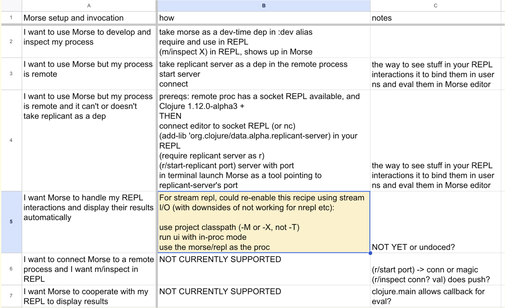
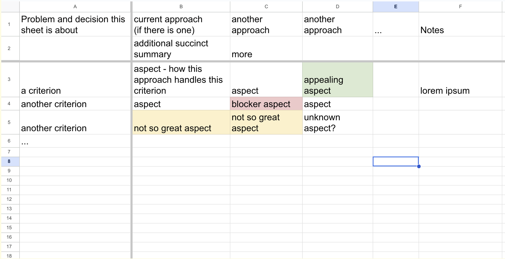
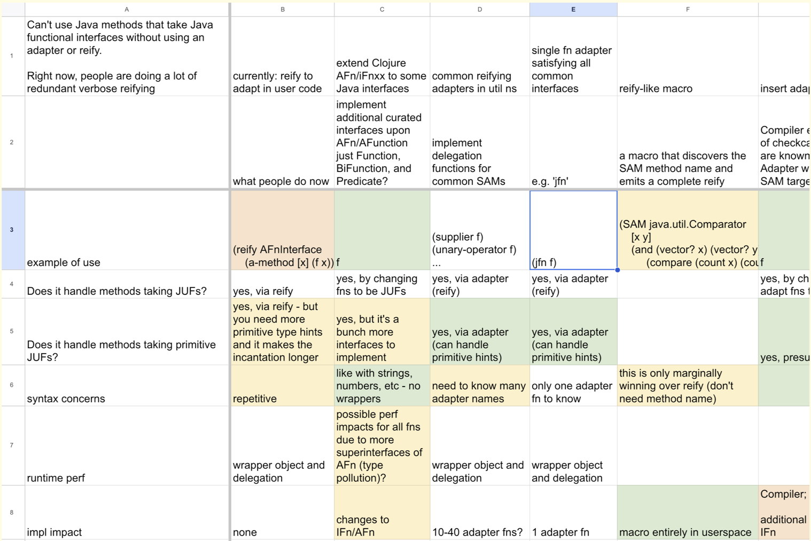
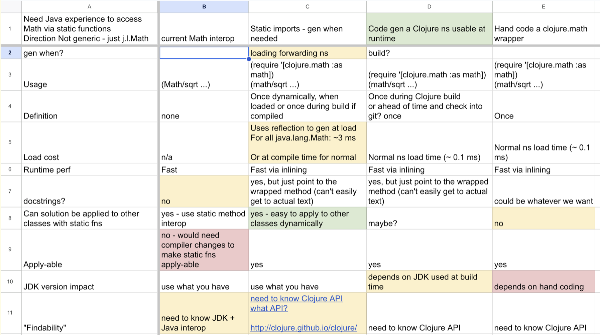

[Time 0:00:00]
slide title: Design in Practice
Rich Hickey
모두 오셔서 감사합니다. 예전 친구들과 새로운 친구들 그리고 특히 모두가 하는 멋진 일들을 보니 정말 대단해 보입니다. 특히 내 발표 전에 멋진 그래픽이 가득한 알렉스의 발표를 해줘서 너무 고맙습니다. 그래서 제 발표에서는 그래픽 없이도 충분히 이해할 수 있는 내용으로 준비할 수 있었습니다.
[Time 0:00:26]
slide title: Objective - Demystify Design
not (just) going to the hammock
practice - 'what you do'
concrete techniques with tangible outputs
demonstrate _progress_ 'walk forward'
activities you can make PM stories out of
thus make time for, throughout the dev process
not pleading for 2 weeks of nebulous 'hammock time' up front
valuable artifacts that make the effort evident
tips and techniques, not a formal method or anything highfalutin
이것은 Design In Practice입니다. 이곳의 목적은 디자인을 좀 더 명확하게 이해시키는 것입니다. 제가 지난 발표에서 디자인에 대한 많은 아이디어를 이야기했지만, 실제 실천 방법에 대해서는 조금 모호하게 남아 있었습니다. 그래서 디자인에 대한 상상 속의 마법 같은 것들을 해소하고자 합니다. 디자인은 배울 수 있는 것이며, 구체적인 활동, 연습, 또는 우리가 하는 것들이 있다고 생각합니다.
그리고, 단어 정의 빙고를 하고 계신 분들께, 오늘 하루에는 한 장 이상의 카드가 있으면 좋겠을 거예요.
우리가 Clojure와 Datomic에서 팀으로 디자인을 하면서 실제로 하는 가벼운 작업들을 이야기하면서, 디자인을 하는데에 필요한 구체적인 것들을 이야기하고자 합니다.
또 하나 이야기하고 싶은 것은 활동으로 전환할 수 있는 것들입니다. "우리는 더 많은 디자인을 하고 싶은데, 항상 정당화할 수 없다."라고 말하는 사람들이 많은데, "문제를 생각해보고 나서 두 주간 쉬어야 한다"와 같은 모호한 이야기를 하는 것입니다. 실제로 두 주간 쉬어야 할 필요는 없을 수도 있습니다.
활동을 구체화하는 것이 좋은 이유 중 하나는, 이것들이 프로젝트 관리 시스템에 이야기로 들어갈 수 있어서, 아웃풋을 가지고 할 일이 될 수 있기 때문입니다.
또 다른 이야기하고 싶은 것은 진행 상황입니다. "디자인이란 것은 알겠는데, 계획 시트나 다이어그램을 그리는 것 빼고는 내가 뭘 했는지 모르겠다"고 말하는 사람들이 많습니다. 소프트웨어를 만들 때는, 하루하루 쌓여가는 것을 볼 수 있고, 더 많은 기능들을 수행하는 것을 볼 수 있습니다. 그러나 디자인을 할 때, 어떻게 전진하는 것을 의미하는 걸까요? 전진하는 것을 알 수 있을까요, 아니면 그저 돌고만 있을까요?
이것은 어떤 종류의 방법도 아닙니다. 저는 그것을 채택하고 싶지 않습니다. 저는 적절한 방법을 비하하려는 것이 아닙니다. 그리고 정말 멋진 디자인 방법론이 많이 있습니다.
[Time 0:02:39]
slide title: Design
design - Latin for 'waiting to code'
_coding happens throughout_
performing experiments
answering interim questions
why you want a language that supports exploratory programming
without being in a project building context
우리 모두 알고 있듯이, 그저 상기시키고 싶을 뿐입니다. "디자인"이라는 라틴어 단어는 "코딩을 할 수 없다"는 뜻입니다.
[Audience laughter]
사실 그게 맞다고 생각하지 않습니다. 실제로 우리가 이 발표를 진행하며 볼 것처럼, 디자인 과정에서는 코딩을 계속하게 됩니다. 시스템을 작성하기 시작하는 것은 아니지만, 시스템이 될 수 있는 것을 탐색하고, 시스템의 부분이 될 것으로 예상되는 것을 배우며, 질문에 대한 답을 찾으며 그런 일을 합니다. 그리고 그것이 그런 작업을 하는 데에 프로젝트 관련 오버헤드가 전혀 없는 언어에서 작업하는 것이 중요하다고 생각하는 이유 중 하나입니다. 무언가를 시작했거나 프로젝트 상황에 있지 않아도 탐색적 프로그래밍을 시작할 수 있는 언어에서 작업할 필요가 없습니다. 편집기를 열고 시작하면 됩니다.
[Time 0:03:28]
slide title: Design (cont.)
'mark out, a plan'
the emphasis in this talk is about supporting your (team's) reasoning _process_,
not just the end-product blueprint-like design
_writing down_ your thoughts helps you form them
_techniques can guide your thinking and decision-making_
reified/refined/shared concepts
onboarding/resumption
validation
eventually, documentation
아니요. 실제로 "디자인"이라는 단어는 "무언가를 수행하기 위한 계획을 세우다"를 의미하거나, 적어도 이 발표에서 사용할 의미입니다. 이 아이디어를 확장하여, 무언가가 세상에서 일어나야 한다는 감각부터 계획을 세우고, 계획을 세우는 것, 그리고 그 후 개발하는 모든 단계를 포함하는 전체적인 과정이라고 할 수 있습니다.
그리고 이 계획을 세우는 것이 매우 중요하다고 생각합니다. 우리는 항상 글을 써야 합니다. 우리는 우리가 생각하는 것을 보기 위해 얼굴 앞에 텍스트를 놓고, 우리 팀원들도 마찬가지입니다. 이것이 처음부터 생각하는 데 매우 중요한 것입니다.
이것은 보관용 활동이 아닙니다. 이것은 역사 기록을 위한 것이 아니며, 문서화를 위한 것이나 그와 비슷한 것도 아닙니다.
이것은 생각하는 일의 일부로써 쓰는 것입니다. 종이 위에 무언가를 적으면 그것은 물건이 됩니다. 그것은 당신의 머리에서 시작되었지만 이제 당신의 입력이 됩니다. 또한 어떤 것을 일정 시간 동안 놓아 두고 나중에 다시 보거나, 다른 사람들이 함께 일하도록 하기 위해서도 매우 유용합니다. 그리고 아마도 최종적으로는 일어난 일을 문서화하는 데 사용할 수 있는 것으로 변할 수도 있습니다.
[Time 0:04:48]
slide title: Words
Choose good words, _all the time_
not about bikeshedding or premature marketing
precision in naming == precision in thinking 'before + cut'
_eschew nicknames, superheroes etc._
not semantic/meaningful
give cover to fuzziness
don't track evolving thinking
_be succinct_ 'gird/gather up'
brief, clear and complete
not just concise 'cut off', or merely hinted at
그래서 우리는 쓰게 될 것입니다. 우리는 말하는 것도 있겠지만, 특히 단어를 써 내려가는 것이 좋습니다. 우리는 그림도 그릴 수 있습니다. 그리고 나는 좋은 단어를 선택하는 것이 매우 중요하다고 생각합니다. 이것은 항상 해야 하는 일입니다. 그리고 제가 말하는 것은 제품의 올바른 이름을 선택하거나 마케팅과 관련된 것은 아닙니다.
의도한 의미를 갖고 모든 사람들이 이해할 수 있도록 돕는 단어를 선택하는 것입니다. 정확성과 절삭에 대한 이념은 항상 나타납니다. "cis"는 절삭을 의미하는 부분입니다. "decide"의 동일한 부분입니다.
그래서 우리는 무엇을 말하고 있는지 정확히 알아야 합니다.
그래서 나는 별명을 좋아하지 않습니다. 어떤 슈퍼히어로들도 아닙니다. 가장 끔찍한 일 중 하나는 프로젝트에 도착하여 프로젝트의 다이어그램을 찾은 것이었습니다. 상자 안의 별명, 상자 안의 별명, 상자 안의 별명이 라벨이 없는 화살표로 서로 연결되어 있었습니다. 당신은 다른 사람을 돕지 않으며 당신 자신도 돕지 않습니다. 이러한 이름은 의미론적이지 않습니다.
그리고 특히 의미있는 이름이 아니기 때문에, 마음이 바뀔 때 변경할 필요가 없다는 것을 의미합니다. "Kryptonite"나 "The Flash"와 같은 이름으로 지었다면, 내가 하는 일이 바뀌어도 여전히 "The Flash"라고 불러도 괜찮습니다. 따라서 정확한 단어를 사용하려고 합니다.
그리고 다른 것은 적은 공간에서 복잡한 것을 말할 수 있어야 한다는 것입니다. 이것은 또 다른 중요한 기술입니다. 이 발표에서 "간결"이라는 단어를 계속 말할 것입니다. 이것이 무슨 의미인지 이해하는 것이 중요합니다. 내가 단어의 어원을 알지 못해서 찾아보았는데, 전투 전에 토가를 걷어올리는 것을 의미합니다.
중요한 것은 간결하려는 것이 모든 것을 수집하는 것입니다. 간결함이나 "여기에 말할 단어가 단지 여섯 개밖에 없으니까 중요한 세부사항을 생략해야 한다"와 같은 것은 아닙니다. 우리는 생각을 모으려고 노력할 것입니다.
[Time 0:07:08]
slide title: More Words
_use the dictionary_ (not just good for writing keynotes)
_go right to the origins_
- most useful/abstract semantics
- discover the composition within words
a good word later becoming 'wrong' could mean:
you've changed your mind w/o acknowledging it
you are drifting from your intentions
_your thinking will evolve and your words (story titles etc) should also_
또 다른 것은 사전에 대한 것입니다. 이것은 발표를 쓰는 데에만 유용한 것이 아닙니다. 매일 사용하는 것이 좋습니다. 무언가를 명명해야 할 때 사전을 꺼내볼 때가 있습니다. 모두가 어휘집를 쓰며 적합한 단어를 찾으려고 애쓰게 됩니다. 좋은 단어는 얼마나 훌륭한지 설명할 수 없으며, 모두가 이렇게 하는 것을 권장합니다.
특히 접두사와 접미사를 분해하여 어원을 파악하는 것이 중요합니다. 왜냐하면 어원은 대부분의 우리가 사용하는 단어가 합성어라는 것을 보여주기 때문입니다. 전치사나 접두사 부분에는 흥미로운 내용이 가득합니다. 예를 들면: 무엇을 향해 가고 있는지? 무엇으로부터 멀어지고 있는지? 물건을 모으고 있는지? 아니면 분리하고 있는지?
이렇게 하면 추상화 과정이 시작됩니다. 세부 사항에 묶이지 않은 방식으로 사물을 생각하게 됩니다.
정확한 단어를 사용하는 또 다른 이점은, 이 단어를 살펴보고 무언가를 전달하려고 할 때 이 단어가 틀렸음이 드러날 수 있다는 것입니다. 이전에는 좋은 단어였을 수도 있고, 그저 문제 없이 생각이 바뀌었을 수도 있습니다. 그러나 좋은 단어를 사용했다면 이 단어가 잘못된 것으로 보일 것이며, 멈추고 더 나은 단어를 선택할 수 있습니다.
[Time 0:08:38]
slide title: Technique: Glossary
_terms are inevitable in tech_
valuable shorthand
don't presume a shared understanding
define, in one place
use uniformly and consistently
helps non-tech folks trying to follow along
_when terms break, fix or abandon_
좋아요. 이제 첫 번째 기술을 배울 시간입니다. 첫 번째 기술은, 작업 중에 만드는 자료에 용어집을 추가하는 것입니다. 우리는 모든 종류의 용어와 기술을 다룰 예정입니다. 기술자들 사이에서도 우리는 한 단어를 언급할 때마다, 누구나 그 단어에 대해 다른 생각을 하며 머릿속에서 떠오르는 이미지가 모두 달라집니다. 그러므로, 모두가 당신이 무슨 말을 하는지 이해한다고 가정하지 마십시오.
용어를 정의하고 사용하기 전에 하나의 장소에 정의를 둘 수 있도록 하고 일관적으로 사용하세요. 한 단어로 두 가지 의미를 나타내지 마세요. 그것에 대해 느슨하지 마세요.
이것은 일반적으로 어려운 일이므로, 이것은 목표입니다. 누구나 완벽하게 할 수는 없습니다. 이것은 열망할 가치가 있는 것입니다.
그리고 또 다른 것은, 뭔가가 깨졌다면, 고치거나 버리세요. 이러한 자료와 기술들은 일시적인 것입니다. 당신은 그것들을 만들고 지나갈 것입니다. 하지만 이것은 유지해야 할 것 중 하나입니다.
[Time 0:09:39]
slide title: Example: Glossary
Term Meaning
locality A property of data: It is a measure of the distribution
of datoms you need to find, across segments as seen from
the perspective of one of the indexes.
affinity A strategy for assigning partitions, where you say that
things are related and should be in the same partition,
and thus grouped together in storage
(could be coaligned with another entity, with time, with
a value, with a batch)
partition See https://docs.datomic.com/on-prem/schema/schema.html#partitions
Partitions group data together (in storage), providing
locality of reference when executing queries across a
collection of entities.
Entities in the same partition to sort and be stored
together in E-leading indexes, i.e. EAVT and AEVT.
Partitions are associated with entity ids, and are named
by keywords, or referred to by index in a space.
Encoded as hi bits in entity ids.
Partition entity ids are suitable as arguments to
d/terpid, d/entid-at, and :db/force-partition
explicit partition
partition associated with an explicitly-created, named
partition entity
datomic comes with 3 explicit partitions: :db.part/db
:db.part/user and :db.part/tx
implicit partition
a partition that can be referred to by its index in a
range of integers 0<=x<524288. These partitions have
entity ids, and they require no explicit installation.
Their entity ids consist of: part=index with the 20th bit
set, eidx=0
In larger applications, you may want to spread data
across a larger number of partitions. Implicit
partitions provide a mechanism for this.
Implicit partitions provides a way to manage a large
number of partitions numerically and algorithmically.
old ref to partition sharding
primary the owning side of affinity, use to choose partition for
related (e.g. the customer)
related the "owned" side of affinity, gets partition from primary
(e.g. some activity entities related to a particular
customer)
이것은 예시 용어집입니다. 아마도 보기 힘드실 겁니다. 좀 더 보기 쉽게 만드는 방법을 고민해봐야 할 것 같습니다. 하지만 이것은 Datomic에서 지역성, 친화성, 파티션 등에 대해 이야기하는 데 사용되는 매우 구체적인 용어들을 포함한 실제 용어집입니다. 이 용어집은 약 8개월 동안 지속되는 프로젝트를 통해 관리되었습니다. 이러한 방식으로 용어집을 작성하고 유지하는 것을 권장합니다.
[Time 0:10:09]
slide title: Questions
_a most powerful thinking tool_
to formulate a question is to reify what you seek
getting questions right is half the battle
_questions provoke_, often novel thinking
logic (just) helps us rule out some of it
좋아요. 그래서 우리가 기술의 일환으로 하고 있는 다른 일은 질문하는 것입니다.
질문은 매우 강력한 도구입니다. 이것은 오래된 도구입니다. 질문을 하고 질문을 구성하는 것은 아름다운 것 중 하나입니다: 당신은 뭔가를 찾고 있다는 것을 명확하게 했습니다. 당신이 뭔가를 말할 때 당신의 의도는 분명하지 않습니다. 그러나 당신이 묻는다면, 당신이 필요로 하는 것이 분명해집니다.
그래서 내 생각에, 좋은 질문을 하기 위한 기술이 필요합니다. 이것은 또 다른 것입니다. 당신이 이것을 더 자주 하면 더 나아집니다. 또 다른 것은 질문이 도발적인 것입니다. 그것은 당신을 찌르기 때문입니다. 물론, 다른 사람에게 질문을 할 때 그들은 찌르는 것처럼 느낄 수 있습니다. 그래서 당신은 좋은 질문하는 법, 질문 받는 법, 그리고 질문 과정을 편안하게 받아들일 수 있도록 연습해야합니다. 이것은 긍정적인 것입니다.
논리는 결정을 내리고 문제를 해결하는 데 중요한 부분이지만, 대부분 부정적인 것입니다. 즉, 우리는 논리를 사용하여 "아니오, 이것은 유지될 수 없습니다"라고 말합니다. 이것은 모순입니다. 이것이 참이면, 그것은 그렇지 않을 수 없습니다. 이것은 대부분 우리가 어떤 것을 배제하기 위해 사용하는 방법입니다.
[Time 0:11:36]
slide title: Technique: The Socratic Method
_interrogate 'ask together'_
examine an idea dispassionately
questioning its underlying assumptions, consistency
Dispassionate 'without suffering'
you are not your idea
you are a source of ideas, some better than others
_We don't define/opine the truth, we discover it_
'The Socratic Method: A Practitioner's Handbook' - Farnsworth
그렇습니다. 다른 기술로 추천하는 것은 소크라티스적 방법론을 발견하고 읽어보며 활용하는 것입니다. 이는 역사적으로 잘 정립된 올바른 방법으로, 많은 역사와 명확한 개념이 있습니다.
이는 함께 하는 활동입니다. 질문을 이용하여 진실을 찾으려고 함께 작업하는 것입니다. 문제를 발견하고 해결하는 데 논리가 중요한 역할을 합니다. 하지만 대부분 부정적인 역할을 합니다. 이는 대부분 제외시키기 위해 사용하는 방법입니다.
문제 해결에 대한 다른 기술은 소크라티스적 방법론을 발견하고 읽어보며 활용하는 것입니다. 이것은 리더가 질문을 하면서 사람들을 괴롭히는 것이 아니라, 진실을 찾기 위해 함께 노력하는 것입니다. 질문에 대한 답을 적극적으로 고민하고 검토함으로써 진실을 찾아 나가는 것입니다.
그리고 질문은 도발적인 면도 있습니다. 이것은 아이디어를 분석하는 무정한 활동입니다. 그리고 이것은 고통을 초래하지 않아야 합니다. 하지만 이것은 팀으로 소크라티스적 방법론을 시도하면서 대면하는 큰 도전입니다. 이것은 일반적이지 않으며, 이러한 대화 방식이 사람들 사이에서 사라졌기 때문입니다. 이는 어떤 형태로든 논쟁이나 공격, 적대감 등으로 오해될 수 있습니다. 하지만 이것은 그것이 아닙니다.
그래서 내 아이디어에서 제 자신을 분리하는 것을 추천합니다. 이것은 스스로 시도할 때에도, 자신의 아이디어를 제시하고 반대하면서 생각해야 합니다. 이것을 반복해야 하며, 아이디어에 감정을 붙이지 않고 분별해야 합니다. 여기에는 어떤 객관적인 진실이 존재하고, 우리는 그것을 찾고자 노력하는 것입니다. 우리는 그것을 창조하는 것이 아니라 발견하는 것입니다.
Socratic method(소크라티스적 방법)에 대해 더 배우고 싶다면 이 책을 추천합니다. 이 책은 정말 멋지고 좋은 자료입니다. 시작부분에는 역사적인 내용이 많이 나오는데, 그 부분은 건너뛰어도 괜찮습니다. 제 생각에 이 책은 정말 좋습니다."
[Time 0:13:33]
slide title: Father Watson's Questions
Where are you at?
Where are you going?
What do you know?
What do you need to know?
Devs are good at the first two, but those miss 'why?'
그래서 우주에서 가장 큰 소크라틱 마법사들 중 일부는 예수회입니다. 나는 고등학교에서 예수회와 함께 공부하는 행운을 누렸습니다. 내 담임 선생님은 예수회 신부인 워튼 신부였습니다. 그는 물리학 수업이나 대수학 수업에서 이 질문들을 항상 우리에게 던졌습니다. 그는 문제를 해결하는 방법으로 이 질문들을 사용했습니다.
문제를 바라보면 이 질문들은 의미가 있습니다. 무엇을 가지고 있나요? 나는 X와 Y를 알고 있고 X를 찾으려고 하고 있습니다.
어디로 가고 있나요? 나는 X를 찾아낼 것입니다. X는 알고 있습니다. Y를 알아내기 위해 무엇을 할 건가요? 물건을 반대편으로 옮겨서 Y를 분리하려고 할 것입니다.
하지만 그는 또한 이 질문들을 삶의 질문으로서 우리에게 던져주었습니다. 내가 어디에 있나요? 어디로 가고 있나요? 내가 뭘 아는가요? 내가 뭘 알아야 하나요?
우리는 개발자로서 "내가 어디에 있나요?" "어디로 가고 있나요?" 이것이 우리가 잘하는 것입니다. 이것이 스탠드업 회의입니다. 어제 뭐 만들었어요? 빵통을 만들었습니다. 오늘 뭐 만드나요? 토스터를 만들고 있습니다.
그리고 체크하면서 일들을 하고 있지만 왜 그 일을 하고 있는지에 대해서는 자주 이야기하지 않습니다. 후자의 두 가지 질문은 지식을 나아가게 하는 관점에서 왜 일을 하는지에 대해 이제 이야기하고 있다는 것이 중요한 부분입니다.
[Time 0:14:59]
slide title: Technique: Reflective Inquiry
Understanding Activity
----------------------------------------------------------------------
Status 'to stand' What do you know? Where are you at?
----------------------------------------------------------------------
Agenda 'to be done' What do you need to know? Where are you going?
this is a framework that can be applied throughout the design process
_note the importance of thinking about your thinking_
reflect - 'bend back'
inquiry - advancing knowledge, is the driver
그래서 우리는 이 네 가지 질문을 두 개의 축과 두 개의 단계로 분해할 것입니다. 하나는 이해 축입니다. 우리의 이해는 어떻게 진전되고 있는가요? 어떻게 우리의 이해가 더 발전하고 있나요? 저는 개발할 때, 우리가 더 많은 코드를 만들고, 더 많은 기능을 추가하며, 소프트웨어가 더 많은 일을 할 수 있을 때 진척이 있다는 것을 알고 있습니다.
디자인할 때, 우리가 만들고 있는 것은 무엇인가요? 디자인에 대해 생각하는 한 가지 방법은, 우리가 이해를 창조하고 있는 것입니다. 우리의 이해를 확장하고 있는 것입니다. 활동의 주도 요소는 이해를 확장하는 것입니다.
그리고 각각의 두 질문 중 하나는 상태 질문입니다. 맞죠? 지금 우리가 뭘 알고 있나요? 우리는 양 축 모두에서 손에 무엇을 가지고 있나요?
그리고 나서 다른 하나는: 다음에 무엇을 하고 싶은가? 우리는 우리가 알고 싶어하는 다음 것, 이해하려는 다음 것에서 우리가 하는 것을 주도할 것입니다.
그리고 이 프레임은 언제든지 꺼내어 쓸 수 있는 프레임입니다. 내가 어디에 있나? 내가 뭘 아는가? 내가 뭘 알아야 하는가? 그걸 어떻게 처리할 것인가? 디자인의 다른 단계에 대해 이야기 할 때 이 프레임을 계속 사용할 수 있다는 것에 대해 이야기할 것입니다.
여기서 간단히 언급하고 싶은 다른 것은 어떻게 이것이 반영적인지 봅시다. 당신은 당신이 무엇을 생각하고 있는지 생각하고 있습니다. 이것은 매우 중요합니다. 당신이 무엇을 생각하고 있는지 인식하는 것은 당신이 생각하는 데 도움이 됩니다. 또한 배경적인 생각에 일정을 정하는 데도 도움이 됩니다. 그래서 그것이 반영적으로 되는 것입니다. 이것을 반성적 탐구라고 부를 것입니다.
[Time 0:16:42]
slide title: Technique: PM Top Story/ticket
Several design techniques contribute to your 'top' story in PM
Looking to always create structured stories with sections for:
Title
Description
Problem Statement
Approach
_Design stories_ contribute to _building a 'top' story_
여기서 좀 더 자세히 얘기해보려고 합니다. 이제부터는 이 최상위 티켓에 기여하는 단계들을 살펴보기 전에 이야기해보고 싶은 것이 있습니다. 제가 보통 사람들이 겪는 문제 중 하나는, "우리는 뭔가를 만들 거야" 라는 프로젝트 관리 체계를 가지고 있으면서도 "우리는 아직 뭘 할지 모르는데 이미 티켓을 작성하고 있어. 너희가 뭘 하고 싶은 건지도 모르는데 티켓을 어떻게 작성할 수 있지?" 라는 거죠.
그리고 무슨 티켓을 작성해야 할 지도 모르는데 그냥 쭉 작성하면 안 되겠죠. 먼저 "우리가 전체적으로 어떤 계획을 가지고 있어야 한다" 라는 내용의 티켓이 있어야 해요. 이 티켓은 첫 번째 티켓이 될 수도 있지만 마지막 티켓이 될 수도 있습니다. 이 티켓은 "상황을 잘 이해하고 있으니까 우리의 목표는 이것이고, 이것을 위해 이렇게 해 나갈 거야" 라는 내용을 담은 초기 티켓입니다.
하지만 이 티켓을 작성하기 전에, 우리는 미션을 정하고 문제를 잘 이해하며 이 문제를 해결하기 위한 접근법과 방법을 고민하며 초기 스토리에 이바지할 디자인 작업을 해야 합니다.
나는 모든 스토리가 이러한 네 가지 부분을 가져야 한다고 생각한다. 이들에 대해 더 자세히 이야기해볼 것이다. 제목, 상황에 대한 설명, 문제에 대한 명세(추가적인 설명), 그리고 디자인을 수행하는 방법에 대한 접근 방식이 있다.
따라서 내가 이야기하는 스토리가 최상위 스토리에 기여하는 이야기라면, 나는 초기 디자인 스토리에 대해 이야기하고 있다는 것이다. 디자인 활동을 일정에 포함시키려고 했다. 그러나 초기 스토리는 디자인을 수행하는 것에 대한 이야기일 것이다. 이 스토리들이 최상위 스토리에 기여할 것이고, 이 최상위 스토리는 앞으로 나아가는 데 필요한 스토리일 것이다.
[Time 0:18:12]
slide title: Example: Story
Support Java Streams in Clojure's seq function
Description
As Java Streams become more pervasive, users struggle with being
unable to process them using Clojure's standard library, which does
not accept them.
Problem
Java Streams are not seqs, nor do they implement any interfaces to
which Clojure already bridges, thus are not accessible to Clojure's
functional operations. Furthermore, they are stateful and not
functional, and require special handling.
Approach
Java streams are stateful (like iterators) but we need the ability to
seq (like `iterator-seq` which caches from stateful iteration),
reduce, and into from a stream. Once we have that, we can leverage
existing Clojure seq/transducer tech to manipulate stream.
Create:
+ Reduce support via `Stream.reduce`, needs BinaryOperator (see
functional interfaces story)
+ `stream-seq!` similar to `iterator-seq` - creates a seq as it reads
stream
+ `into` support via new `stream-into!` - implemented with Collector,
and utilizing transients etc. Note these will be 'terminal'
functions on the Stream.
Planning Sheet: https://docs.google.com/spreadsheets/d/1gmVNHCa6
[portion redacted] 3dy_-TcE/edit#gid=1073327933
모두 좋습니다. 이것은 예시 최상위 스토리가 아닙니다. 이것은 그럭저럭 잘 짜여진 스토리의 예시입니다. 사람들이 말하는 것이 있습니다. 나는 클로저 seq 함수에서 자바 스트림을 사용하고 싶습니다.
설명은 세계의 상황에 대해 이야기하지만 무엇이 잘못되었는지는 언급하지 않습니다.
문제는 그것에 대한 도전이나 장애물에 대해 이야기합니다.
그리고 접근 방법입니다.
이 강의는 이러한 모든 것들의 세부 사항을 파헤칠 것입니다. 하지만 그것이 스토리라는 것입니다. 그리고 최상위 스토리는 이와 유사하지만 전반적인 목표에 대한 것입니다.
[Time 0:18:48]
slide title: Design Progress
_measured by increasing understanding_
of the truth of the world
and your opportunities within it
decisions made _and why_
not checking off some process/method or design artifact list
or making a plan from your first idea
좋아요. 이미 이에 대해 얘기했습니다. 디자인 진행 상황은 우리의 이해력을 높이고, 내린 결정을 추적하면서, 중요한 것은 왜 그런 결정을 내렸는지에 대해서 측정할 것입니다.
중요한 것은 이것이 체크리스트 형식의 것이 아니라는 것입니다. 저는 열거하는 활동 중 어느 것이 필수적인 것인지 말하거나, 당신이 집에 돌아가서 체크리스트를 작성하면서 "우리는 Rich Hickey의 디자인을 이 체크리스트를 확인하여 할 것이다"라고 말하지 않을 것입니다.
그게 아니에요. 당신은 자신의 이해력을 전진시키기 위해 어떤 것을 하든지 그 활동이 의미있는 것이라면 그것을 하게 될 것입니다.
[Time 0:19:23]
slide title: Design Phases
_not everything with any linearity is a 'waterfall'_
nor do you want 'iterative development'
iterate == Latin for 'do-over'
better: incremental - 'grow into'
more like a hike up the (understanding) mountain, not always up, but trending up
being able to name phase 'appearance' helps with 'where are you at?'
not monotonic - ok! _stay open-minded_
this is when change is cheapest
_be explicit about backtracking_
그래서 저는 디자인이 직선적으로 나아가는 것, 이 선형성이 실제로 존재한다고 생각합니다. 폭포수 모델이라고 불리는 것에 대한 많은 반발이 있었습니다. 설계 분석을 하고, 명세를 작성하고, 코드를 작성하고, 그 다음 배포한다는 아이디어가 있었습니다.
그게 정말 끔찍하지 않았나요? 그것이 끔찍했던 이유는 조직적 구조가 만들어져서 한 사람이 이 부분을 하고 다음 사람이 이 부분을 하고 또 다음 사람이 이 부분을 하는 식으로 일이 처리되기 때문입니다. 그래서 이전에는 "당신이 한 일의 모든 부분이 잘못되었음을 깨달았나요?"라는 것처럼 물건을 전달하는 경우가 많았습니다.
하지만 그것을 반대로, 즉 반복적인 프로그래밍이라는 아이디어로 바꿨습니다. "do-over"라는 것은 라틴어로 "다시 하기"를 의미하는데, 이것은 농담이 아닙니다. 이러한 의미로 반복적이라는 단어가 사용됩니다. 그리고 저는 "다시 하기" 프로그래밍이라는 것이 존재한다고 생각하지 않습니다. 그것은 진정으로 좋은 것을 만드는 방법이 아니라고 생각합니다. "점진적"이라는 단어가 더 나은 단어일 것입니다.
좀 더 나아가고 우리의 이해를 증진시키려고 노력할 것입니다. 그것은 단조롭지 않습니다. 우리는 뭔가 좋은 아이디어라고 생각할 수 있습니다. 더 많은 것을 배우고, "아니요! 그것은 좋은 생각이 아니었다"라고 말할 수도 있습니다. 그리고 다른 방법을 시도해 볼 것입니다.
그러나 "phase"라는 단어의 멋진 점은, 월의 위상처럼 "외관"을 의미한다는 것입니다. 뭔가를 했고, 그 다음 것을 보고, 그 다음 단계를 본 것입니다. 소프트웨어 개발에 대한 모든 것이 미래에 일어날 일을 알려주는 네비게이션처럼 프로그래밍 된 것은 아닙니다.
그래서 괜찮습니다. 단조롭지 않습니다. 마음을 열어 두려고 노력해야 합니다. 되돌아 가야 할 때가 있습니다. 그러나 하나 말씀드리겠습니다. 되돌아 가고 있다면, "그렇게 말하십시오". 우리가 접근 방식이 작동한다고 생각했었고, 구현 세부 정보를 살펴보기 시작했을 때 더 큰 문제가 있거나 문제를 이해하지 못했거나 의도한 대로 할 수 없었다는 것을 발견했다면, 이전 단계로 돌아가서 장애물을 극복하기 위해 다른 접근 방식을 찾으려고 한다고 말하세요.
[Time 0:21:30]
slide title: Phases
"these are words with a D this time"
Describe (situation)
Diagnose (possible problems)
Delimit (the problem you are going to solve)
Direction (strategy, approach)
Design (tactics, implementation plan)
Dev (build it)
at any time:
Decide (to do, or not)
the King Crimson reference에 추가 점수를 드리죠. 누가 그 레퍼런스를 알아차리셨나요? 알겠다는 분들이 계신가요? 아, 아무도 없구나. 그건 저도 예상한 낮은 확률이었습니다.
[밴드 "King Crimson"의 노래 "Elephant Talk"에서 "These are words with a D this time"이라는 가사가 있습니다.]
그래서 지금 이 상세 내용들은 설명(Describing), 진단(Diagnosing), 문제 범위 결정(Delimiting the problem), 대략적인 방향 결정(Choosing a direction), 구현 세부사항 결정(choosing particulars as implementation details), 그리고 구현 단계의 모든 것을 다루게 될 것입니다. 하지만 전체적으로 보면, "결정"을 내릴 가능성이 항상 존재한다는 점이 있습니다. 이 때 "결정"이라 함은 범위 결정에 대해 얘기하는 것입니다.
어떤 문제를 마주치면서 당신은 그것에 대한 어느 정도 이해를 필요로 하게 됩니다. 그리고 "우리는 이 문제에 대해서 아무것도 하지 않을 것이다"라고 말하게 될 것입니다. 또는 다양한 접근 방식을 검토해본 결과, 문제의 80% 이상을 해결할 수 있는 방법은 없다는 것을 알아냈을 때, "나머지 20%는 우리가 다루지 않을 것이다"라고 말하게 될 수 있습니다. 또는 누군가가 당신의 프로젝트에 돈이 없다고 말할 때, "그래, 그렇게 되겠네요!"라고 말하게 될 수 있습니다.
이 결정 사항은 순서를 따지지 않습니다. 당신은 언제든지 결정을 내릴 준비가 되어 있어야 합니다.
[Time 0:22:46]
slide title: Phase: Describe
_the situation_
bug/failure reports
feature requests, external and internal (backlog)
context
_What do you know?_ something seems wrong/obstructive in the world
_What do you need to know?_ the extent of it
_Where are you at?_ observing, listening
_Where are you going?_
- initial story title
- _write down_ a Description in top story
"Describing"은 말 그대로 적는 것을 의미합니다. 디자인의 첫 번째 단계는 단순히 듣고 있는 것을 적어내는 것입니다. 사용자가 불평하고 있거나, 슬랙에서 X를 원하는 사람들, 모두가 Clojure가 불편하다고 말하는 등의 것들입니다. 무엇이든 듣고 있는 것을 캡처하고자 합니다. 어떤 경우에는 시스템에서 실패를 관찰할 수도 있습니다. 지금 진행하고 있는 작업이 버그와 관련이 있다면 버그 보고서가 있을 것입니다. 따라서 예외 스택 트레이스나 운영 시스템 로그가 있을 수 있습니다.
이 단계에서는 그것들을 모두 적어내는 것입니다. 더 많은 로그를 수집하거나, 정보를 얻기 위해 사람들과 대화를 나누기도 할 수 있습니다.
그렇다면, 무엇이 문제인가요? 세상이 잘못된 것 같습니다.
알아야 할 것은 무엇인가요? 얼마나 큰 문제이며, 어디에 있는지, 어떤 영향을 미치는지 등입니다.
당신이 하는 일은 무엇인가요? 관찰하고, 듣고 있습니다.
어디로 가고 있나요? 이것으로 두 가지를 만들려고 노력하고 있습니다: 초기 스토리, 그 최상위 스토리, 그리고 그것에 대한 설명 단락입니다.
[Time 0:23:55]
slide title: Technique: Description
_one paragraph summary_
situation/context
symptoms/reports/observations
requests
_don't_:
say what the problem is
accept as facts assertions that imply what the problem is
instead: X says Y
그래서 Description 단락입니다. 그것은 단락일 뿐이어야 합니다. 당신이 자신을 발견한 상황, 증상 또는 문제 보고서를 설명해야 합니다. 이 모든 것들. 당신은 그것들의 고수준 뷰를 포착하고 세부 사항을 가리킬 수 있습니다.
이것에 대해 매우 중요한 것은 지금 문제가 무엇인지 말하지 않는 것입니다. 이것은 "두통이 있습니다." 입니다. "뇌종양 때문이라고 말하지 않습니다.", 왜냐하면 뇌종양이 있을 수도 있고, 충분한 물을 마시지 않았을 수도 있고, 안경 처방이 잘못될 수도 있습니다.
그것이 아니라, "환자가 두통이 있습니다." 라고 말합니다. 따라서 문제가 무엇인지 말하지 않습니다. 증상이나 불만이 무엇인지 말합니다.
누군가가 문제를 포함한 불만을 제기하면 그것을 사실로 받아들이지 마세요. 그냥 말하기만 하세요: 누군가가 이것이 문제라고 생각한다고 했습니다.
그러면 이제 우리는 최상위 스토리에 그것을 기록할 것입니다.
[Time 0:24:51]
slide title: Phase: Diagnose
'know across' possible problem(s), of two kinds
1 - bugs/defects
- yes bugfixes need design (or revisions of a design)
- lest you just play symptom/code whack-a-mole
2 - features
_What do you know?_ the symptoms/context
_What do you need to know?_ the cause(s)
_Where are you at?_ have good description, evidence
_Where are you going?_
- applying logic and experimentation
- to explicate 'unfold'
다음 단계는 문제를 진단(Diagnose)하는 것입니다. "Diagnosis"는 또 다른 멋진 단어입니다. 이것은 라틴어가 아니라 그리스어이며 "to know across"를 의미합니다. "across"는 "dia" 부분이고, "diagonal"이나 "diameter"와 같은 뿌리를 가지고 있습니다. "nose"는 "to know" 입니다. 또 한번 검색해보았는데, 이 단어가 이런 의미를 갖는다는 것은 정말 멋졌습니다. 이것은 하나의 가능한 알고 있는 것 집합에서 다른 알고 있는 것 집합으로 이동하는 것입니다.
문제는 두 종류가 있습니다. 두 가지 모두 디자인에 대한 것이라고 말하겠습니다. 첫 번째는 뭔가가 망가져서 고치려고 하는 것입니다.
다른 문제는 사람들이 기능을 원하거나, 당신이 기능을 원하거나, 누군가 기능에 대해 이야기한 것입니다. 그리고 아마도 그 기능은 문제에 관한 것입니다. 그래서 기능에서 문제로 이동해야 합니다.
그래서 지금까지 당신이 알고 있는 것은 증상과 맥락입니다. 이것은 방금 전에 한 것입니다.
그리고 이제 알아야 할 것은 원인입니다. 그래서 이제 "좋아요. 머리가 아파요. 이게 머리가 아픈 이유의 다섯 가지 이유입니다." 라고 말할 것입니다.
그래서 좋은 설명이 있습니다. 그것이 이전에 당신이 한 일이었습니다. 그리고 이전에 수집한 증거가 있습니다.
그리고 당신이 가는 곳은: 문제가 무엇인지 찾아보려고 합니다.
[Time 0:26:14]
slide title: Diagnose: Bugs
symptom -> possible problems -> (likely) problem
hypotheses (more than one)
pick one (how?)
use logic first (to rule out)
'most likely' (intuition)
makes the problem space smallest (divide and conquer)
Use the scientific method
다음은 두 가지 부분으로 나누어 이해하겠습니다. 버그 진단은 증상에서 여러 가지 가능한 문제로 건너뛰어 실제로 무엇이 잘못되었는지 찾아내는 것입니다. 예를 들어, 안경 처방전이 잘못되어 머리가 계속 아플 수 있습니다. 더 좋은 안경이 필요합니다.
따라서 당신은 여러 개의 가설을 가지고 있을 것입니다. 여러 개를 가지는 것은 디자인에서 항상 나타납니다. 디자인은 하나를 생각하고 쓰는 것이 아닙니다. 그것은 디지인이 아닙니다. 하나 이상을 생각해야합니다. 그것은 당신이 가져야하는 첫번째 기술입니다: 만약 하나의 것이라고 생각한다면, 두 번째 가능한 이유를 생각해보세요. 두번째 가능성한 이유를 생각해보세요. 팀으로 작업하고 있다면, 각자 이유를 생각해보세요. 물론, 마지막에 말하는 것은 좋지 않습니다.
그리고 그러한 가설들을 처리해야합니다. 여기서 하나 말할 것은: 하나씩 처리하십시오. 다시 말해, 이러한 것들을 하나씩 살펴보십시오. 사람들은 시스템이 무너지고 있다고 생각하고, 예외가 발생하고 있다고 생각합니다. 우리의 코드에 버그가 있거나 라이브러리 코드에 버그가 있거나 JVM에 버그가 있거나 Solar flares 때문인 것 같다고 생각합니다. 그러면 그들은 코드 안에서 이러한 가능성을 찾거나 무언가를 실행합니다.
그냥 그렇게 하지 마세요. 하나를 선택해야 합니다.
이 때 논리가 도움이 됩니다. 때때로 가능성을 보고 "그건 아니에요. 안경 안 써요, 그러니까..."라고 할 수도 있죠. 하지만 그래도 논리적으로 빼낼 수 있는 것이 많습니다.
그리고 다른 여러 가지 요소들이 있습니다. 모든 것들은 시간이 많이 들어 각각의 것들을 깊게 파볼 생각은 없지만, 그 중에 하나는 가장 가능성이 높습니다. 직감적으로 그렇게 생각하거나, 가장 많은 증거가 그것을 가리키고 있다면 그렇습니다.
이곳에서 가장 강력한 도구 중 하나는 문제 공간을 더 작게 만드는 것입니다. 어떤 가설이 문제 공간을 더 작게 만든다면, 이것은 일찍이 조사해 볼 가치가 있는 것입니다. 제가 함께 일하는 프로그래머들에게 자주 이렇게 말합니다. "그것을 더 작은 문맥으로 가져가세요."
시스템에서 문제점을 보았습니다. 그러면 생산 시스템은 거대한 문제점의 덩어리이기 때문에, 이 작은 코드 덩어리에서 문제점을 재현할 수 있을까요? 자신의 코드를 전혀 사용하지 않고도 문제를 재현할 수 있을까요? 라이브러리에 문제가 있을 것 같다면, 클로저 코드를 작성해서 재현할 수 있을까요?
[Time 0:28:48]
slide title: Technique: Scientific Method
_out of scope for this talk_
formulate a supporting/refuting conjecture
design an experiment
_write result template first_
- "If this sheet were filled in we'd know X"
code it, conduct it
apply conjecture logic, repeat
And a great technique here is the scientific method. Stu's given a good talk about this, and I am not going to do that here. 여기 디버깅에 대한 과학적 방법이 있습니다. Stu가 좋은 강연을 하셨고, 저는 여기서 그걸 하지 않겠습니다.
[ Stuart Halloway, "Debugging with the Scientific Method", November 2015 https://github.com/matthiasn/talk-transcripts/blob/master/Halloway_Stuart/DebuggingWithTheScientificMethod.md ]
하지만 각 가설에 대해 입증 또는 반증하려고 하는 추측을 작성하세요. 그리고 이를 테스트할 일종의 코드를 디자인하세요.
여기서 드리는 조언 중 하나는, "나 이거 해결하려고 해", 그리고 일부 테스트를 실행하는 경우가 종종 있습니다. 그리고 그들은 그것을 요약해야합니다. 그러고 나면 요약을 보고 "이 검증을 입증하거나 반박하는 데 도움이되는 정보가 없는 것 같아요" 라고 말합니다.
그러니 실험을 실행하려면, 실험을 테스트하는 코드를 작성하기 전에 결과를 표시하는 "이것이 결과를 표시하는 방법입니다. 여기에 결과를 넣을 것입니다." 라는 스프레드 시트나 템플릿을 작성하세요. 이것에 대한 열, 이것에 대한 열, 그리고 이러한 항목에 대한 행이 있습니다. 그리고 그 템플릿을 보고 "네, 이것을 채우면 이 추측을 수행하기 위해 필요한 모든 정보를 알 수 있을 것 같습니다." 라고 말하십시오.
그리고 그 템플릿의 값을 제공 할 수있는 프로그램을 작성하세요. 탐색 코딩하지 말고, 원하는 답을 얻지 못한 이유를 궁금해하세요.
[Time 0:30:00]
slide title: Diagnose: Feature Requests
_feature: factura: 'making', of an answer_
_not_ the problem
'we don't have feature X' is never a valid problem statement
recognize and kill all such statements
_feature -> problem(s)_ for what that feature is (one possible) answer
what is the user's intention/objective? (not how)
what is in the way?
좋아요. 훨씬 까다롭고 훨씬 더 일반적이며, 훨씬 더 자주 필요하지만, 훨씬 덜 연습되는 것은 기능 요청에서 실제 문제로 건너뛰어서(knowing across) 알아내는 것입니다. 사람들은 항상 "이게 있으면 좋겠다. 이게 있으면 좋겠다"라고 기능을 요청합니다. 당신도 마찬가지로, 자체적인 기능 요청, 백로그 및 좋은 기능으로 생각한 것들이 있습니다.
"기능 X가 없다"는 유효한 문제 진술이 아닙니다. 이것에 대한 증명이 필요하면, 운전 중에 터치 스크린이 있는 자동차에서 blower를 조작하기 위해 "랜덤한 유리 조각 위를 정확한 지점까지 손가락으로 슬라이드해야 한다"는 사람은 없습니다. 이것을 말하는 사람이 없습니다, 맞죠?
하지만 어떤 사람은 "젊은 사람들이 우리 차를 절대 사지 않을 것이다" 라고 말했습니다. 이것이 문제에 대해 이야기하지 않을 때 발생하는 일입니다.
따라서 우리는 기능 요청에서 해당 기능이 가능한 대답 중 하나인 문제로 가려고 합니다. 여기에는 두 가지 마법 같은 일이 일어납니다. 하나는: 기능에서 문제로 전환했습니다. 다른 하나는: 하나의 대답에서 여러 가지 가능한 대답으로 전환했습니다. 그것이 디자인할 유연성을 얻는 곳입니다. 누군가 "토스터 만드는 시간입니다" 라고 하면, 문제를 해결하지 않을 수도 있습니다.
따라서 기능 요청 또는 자신의 기능 아이디어를 가져와서 여기에 대한 의도는 무엇인지, 그리고 어떤 것이 방해 요소인지를 말하는 것을 통해 연습할 수 있습니다.
[Time 0:31:36]
slide title: Phase: Delimit
_the problem you are going to solve_
you might discover multiple problems or bigger problems during diagnosis
_What do you know?_ what the problem is
_What do you need to know?_
- how to state it succinctly
- its scope
_Where are you at?_ have diagnosis
_Where are you going?_
making the problem statement
좋아요. 이제 당신은 이 feature 요청을 문제로 변환했습니다. 그리고 문제 설명서가 있는 것 같아 보이는데요, 한 가지 더 해야 할 것 같아요. 문제의 범위를 제한해야 합니다. 이 일을 하면서, 문제에 대한 개념을 가질 수 있었을 것입니다. 문제에 대한 대화를 나눌 수도 있습니다.
문제 범위를 제한하는 것은 문제를 간결하고 정확하게 말하는 것입니다. 그래서 이 문제를 해결하기 위해 소프트웨어를 만들 것입니다.
문제에 대해 알고 있습니다. 진단에서 그렇게 했었죠. 이제 간결하게 문제를 명확히 기술하고 범위를 설정해야 합니다.
[Time 0:32:16]
slide title: Technique: Problem Statement
_Succinct statement of unmet user objectives and cause(s)_
not symptoms/anecdotes/desires
not remedy/solution/feature - challenge is to filter out
modify your top story title from symptom -> problem
add Problem after the Description in the top story - link to diagnosis work
_subject to refinement_
- as your understanding increases
- don't let your problems statements get stale
This is the most important artifact you will have.
if you don't relentlessly focus on a problem you may make something
that doesn't solve any problem
그래서 문제 명세는 충족되지 않은 목표에 대한 간결한 명세입니다. 우리는 사용자의 의도와 원인에 대해 이야기하고 있습니다. 더 이상 증상이 아닙니다. 우리는 명세에서 이것을 하였습니다. 그것은 여전히 우리 앞에 있습니다. 그것에 대해 무엇을 할 것인가? 그래서 그것이 여전히 존재한다면, "무엇을 할 것인가?"와 같은 어떤 것을 제거하려고 할 것입니다.
문제 명세가 완성되면, 최우선 스토리에서 두 가지 작업을 수행할 수 있습니다. 수정할 수 있습니다. 초기 이야기 제목은 "토스터가 좋은 생각 같다"와 같은 것일 수 있습니다. 이제 "사용자가 카라멜 빵을 좋아합니다"와 같이 문제에 대한 것입니다. 그리고 그것을 제공하는 여러 가지 방법이 있을 수 있습니다.
그래서 여러분은 여기서 최우선 스토리의 제목을 수정하여 문제에 관련된 내용으로 만들려고 할 것입니다. X를 달성하는 방법을 제공했습니다. 이제 목표가 여러분 이야기의 이름이 됩니다.
이것은 훌륭합니다. "토스터를 만드세요", "빵 상자를 만드세요", "뭐든 만드세요"와 같은 프로젝트 관리 시스템에서 작업하는 것이 아니라, "이 문제를 해결하세요", "저 문제를 해결하세요", "그 문제를 해결하세요"와 같은 시스템에서 작업하는 것이 좋습니다. 그리고 당신이 해낸 것을 보면, 그 사다리 목록은 단순히 기능, 기능, 기능, 기능인 목록보다 훨씬 만족스럽습니다.
그래서 또 다른 것은 이제 그 상위 스토리에 또 다른 것을 추가할 것입니다. 타이틀 설명이 있었습니다. 이제 문제 선언을 추가할 것입니다. 이것은 영원히 계속 유지되지는 않습니다. 이것을 다듬을 필요가 있습니다. 잘못된 정보가 있을 수 있습니다. 나중에 발견할 수 있는 미묘함이 놓칠 수도 있습니다. 이것은 또 다른 유지 관리가 필요한 것입니다. 그러나 이것은 짧아야 합니다. 문제가 무엇인지 설명하는 문단이어야 합니다.
이것은 매우 중요합니다. 이것이 없으면 그리고 이것에 끊임없이 초점을 맞추지 않으면, 라디오 소리를 키우기 위해 운전 중에 손가락을 터치 스크린 주위로 슬라이드하도록 누군가에게 요청하는 매우 높은 위험이 있다고 생각합니다.
[Time 0:34:20]
slide title: Phase: Direction
_strategy, approach_
User's intentions and objectives
High-level approaches to addressing
e.g. in-proc/out, lib/app, buy/build, modify/add, automatic/manual etc
_What do you know?_ what the problem is
_What do you need to know?_
- the user objectives in more detail
- the possible approaches
- the best of these
- what matters in deciding (criteria)
이제 두 가지에 대해 이야기하겠습니다: 방향, 전략 및 전술. 항상 이러한 구분을 갖거나 당신의 것이 이러한 방식으로 층을 이루게 될 것이라는 것을 시사하려는 것은 아니지만, 큰 프로젝트의 경우 두 단계가 있을 가능성이 높습니다.
당신은 방향 설정 단계와 구현 결정 단계가 있을 것이며, 단순히 다른 세부 수준에 대해 비슷한 것들을 수행 할 것입니다.
방향 설정 단계에서 전략이 중요합니다. 전략은 대장이나 지도자가 되는 것을 의미하며, 기본적으로 당신이 어디로 가고 있는지에 관한 것입니다. 우리는 모두 그 방향을 따를 것입니다.
여기서 포착해야 할 것은 사용자의 의도와 목표이며, 어떻게 하는 것이 아니라 무엇을 하려는지에 대한 것입니다. 그런 다음 이를 해결하는 방법에 대해 생각해 볼 수 있습니다. 이를 접근 방식이라고 부릅니다. 이들은 고수준이며, 여기서 모두 열거하려고 하지는 않습니다.
그러나 매우 기본적인 것 중 하나는 예를 들어 사용자를 위해 자동화된 솔루션을 제공할 것인지, 사용자가 직접 수행할 수 있도록 도구를 제공할 것인지입니다. 이것은 방향성 결정의 종류입니다. 그래서 문제가 무엇인지 알게 됩니다.
무엇이 필요한가요? 사용자의 목표에 대해 더 자세히 알아야 합니다. 사용자 목표의 레벨을 한 단계 더 파고들고 가능한 접근 방식을 열거하며, 어느 것이 가장 좋은지 결정하려고 할 것입니다. 이것은 큰 단계입니다. 그리고 이러한 결정을 내리는 데 필요한 사항에 대해 고찰해야 합니다.
[Time 0:34:20]
slide title: Phase: Direction (cont.)
_Where are you at?_ Have description and problem statement
_Where are you going?_
Enumerating use cases
Making a strategy DM
criteria, approaches and tradeoffs
determining scope
entering Approach secion on top story
그리고 그 문제를 어떻게 해결할 것인가요? 이미 제목 설명, 문제 설명을 갖고 있습니다. 이제 이 단계에서 나가면서 열거 된 사용 사례를 갖고 있어야 합니다. 또한 나가면서 전략 의사 결정 매트릭스라고 부르는 것을 가져야 합니다. 이는 취할 수 있는 접근 방식을 결정하는 기준과 각각의 대가를 포함합니다.
또한 고수준 범위 설정을 수행할 것입니다. 이는 "우리는 지금 이것을 수행하지 않습니다."와 같은 것을 포함할 수 있습니다. 그러나 "우리는 자동화된 솔루션을 제공하지 않을 것입니다. 그것은 너무 큰 작업이 될 것입니다. 우리는 이미 그것을 느끼고 있습니다. 그러나 사용자가 이 일을 스스로 할 수 있도록 도구를 제공할 수도 있습니다."와 같은 것이 포함될 수 있습니다.
그리고 마침내, 당신은 접근 방식을 나타내는 상단 이야기에 적을 것을 얻게 됩니다.
[Time 0:36:53]
slide title: Technique: Use Cases
_user's intentions and objectives_
in terms of _what_ the user could accomplish
were the problem solved
_not how_ (yet)
make a blank 'how' column for later
should not start with
"the user will push an orange oval button and music will play"
_later_ you will fill in the 'how' column with that kind of recipe for
using the solution you've designed
사용 사례(use cases)에 대해서 말씀드리겠습니다. 대부분의 사람들은 사용 사례를 작성하는 방법을 알고 있다고 생각하지만, 일반적으로 그것이 내가 보고 싶은 사용 사례가 아닙니다. 왜냐하면 다시 두 가지 단계가 있기 때문입니다. 사용 사례의 가장 좋은 첫 단계는 사람들이 달성하려는 것만 얘기하는 것입니다. 세상이 달라지길 원하는 것, 하고 싶은 것에 대해서 말하는 것입니다. 어떻게 하는 것이 아니라요.
따라서, 달성 목표를 적은 작은 시트를 만들고, 어떻게 하는 것은 비어있는 "how"열이 있습니다.
"사용자는 버튼을 눌러야한다, 이 색상이어야 하며 이 작업을 수행할 것입니다"와 같은 카드를 만드는 것은 지지하지 않습니다. 만약 그렇게 하고 싶다면 좋겠지만, 이 강의에서는 그것이 아닙니다.
나중에, 선택한 전략이 있고 구현 방법을 조금 더 알게 될 것입니다. 그리고 돌아가서 "실제로 우리는 사용자가 볼륨을 조절할 때 이상한 노브를 줄 수 있게 만들 것입니다."라고 말할 것입니다.
[Time 0:37:51]
slide title: Template: Use Cases
problem this sheet is about | How (given solution design) | Notes
---------------------------------+------------------------------+-----
user intention/objective | |
another user intention/objective | |
another user intention/objective | |
그래서 시작해 봅시다. 사용 사례의 템플릿은 이렇게 되어야 합니다. 복잡한 것이 아니죠? 하지만 A1 셀 [스프레드시트의 좌측 상단 셀]에 문제점을 입력하세요. "우리가 생각 중인 것"을 상기시키는 거죠. 그것을 빼먹으면 이 시트가 무슨 내용인지 알 수 없습니다. A 열을 채우면서 목적을 입력하세요. 라디오가 더 크게 나오면 좋겠다. 라디오를 더 크게 만들 수 있으면 좋겠다. 라디오를 끌 수 있으면 좋겠다. 전화가 왔을 때 라디오를 음소거할 수 있으면 좋겠다.
어떻게 하는지는 나중에 하면 됩니다. 이제는 그저 하고 싶은 일을 나열하면 됩니다.
[Time 0:38:25]
slide title: Example: Use Cases

그래서 이것이 실제입니다. 우리는 이것을 정말로 합니다. 오늘 Morse에 대해 들은 사람들도 있을 겁니다. 그것의 후속 작업인 REBL도 들어봤을 겁니다. Morse로 할 수 있는 많은 일들, Morse를 사용할 수 있는 많은 문맥, 그리고 Morse를 내 물건에 연결하고 싶은 다양한 방법들이 있습니다.
그리고 우리는 그냥 아이디어를 내다가 브레인스토밍을 했습니다. 이것은 거대한 일이 아닙니다. 우리는 40분 동안 이야기하면서 이 시트를 만들었고, 작성하면서 그것이 무엇인지 이야기했습니다. 하지만 이 use case 단계에서는 A만 하겠죠? B 열, 즉 어떻게 하는지를 보여주는 완성된 이야기입니다.
[Time 0:39:08]
slide title: Technique: Decision Matrix (DM)
_a (google or other live-editing) sheet_
A:1 what decision are you trying to make, for which problem?
_Approaches_ - Columns (but first labels rows)
_Criteria_ - Rows (but first labels columns)
_Aspects_ - Cells
sheets > docs
prose docs create a linearization that makes contrast difficult
그래서 이 단계에서 또 다른 대규모 기술은 결정 매트릭스입니다. 결정 매트릭스에 대해 이야기하는 것이 이 강연의 핵심입니다. 저는 대부분 Org 모드(Emacs의 편집 모드)로 디자인을 할 때 이것을 사용했지만, 이 단계에서 디자인하고 이 작업을 수행하는 가장 좋은 방법은 스프레드시트입니다. 특히, 실시간 편집 스프레드시트입니다. 이 일을 위해 Google Sheets를 사용합니다.
그렇다면 결정 매트릭스란 무엇인가요? 이것은 스프레드시트입니다. 하나 이상의 사람이 동시에 볼 수 있고 편집할 수 있는 스프레드시트입니다. Microsoft도 있을 것이라고 생각합니다.
A1은 무슨 결정을 내리려고 하는지, 어떤 문제를 다루고 있는지 입니다. 언제나 A1입니다. 만약 제가 여러분의 프로젝트에 와서 디자인 멘토링을 받기를 원한다면, A1이 채워져 있지 않으면 무엇을 할지 추측해야 합니다. 문제에 대한 명확한 설명이 필요합니다.
여기에 문제 설명을 복사할 수 있습니다. 하지만 이것은 종종 구체적인 결정입니다. 그러나 그것은 그와 관련이 있어야합니다. 문제를 눈 앞에 두고 유지하는 것이 매우 중요합니다. 그것은 항상 이 문제가 저를 괴롭힌다는 것처럼이어야합니다.
그리고 저는 그것을 보고 있으므로 외부 자극으로서 생각하게 됩니다. 이것 역시 중요합니다.
그래서 무엇을 가져와야합니까? 여러 가지 문제 해결 방법이 있습니다. 이것들은 여러분의 열이 될 것입니다. 첫 번째 열은 행을 라벨링하지만, 다른 열은 여러 가지 가능한 접근 방식입니다.
결정 매트릭스를 만들어 볼까요? 어떻게 결정을 내릴 것인지에 대한 기준이 필요합니다. 이 기준들은 행으로 표시됩니다. 다만, 첫 번째나 두 번째 행은 열의 라벨로 사용됩니다.
마지막으로, 내부 셀에는 그 기준에서 특정 접근법의 측면이 들어갑니다. 이러한 셀은 어떤 행과 열의 교차점에 위치합니다. 구글 시트를 사용하는 것을 강력히 추천드립니다. 문서는 일렬로 배치되기 때문에 대조가 어렵습니다. 이후에 이어질 내용에서 더 자세히 설명하겠습니다.
[Time 0:41:05]
slide title: Template: DM

이것은 DM의 템플릿입니다. 확대해서 볼 필요는 없습니다. 이것은 실제가 아닙니다. 이것은 템플릿입니다. 좌측 상단, A1: 어떤 문제를 다루고 있나요?
[Columns] B C D E는 취할 방식입니다. 이미 이를 해결하는 시스템을 수정하거나 이 부분이 부족한 경우, 첫 번째 방식으로 그것을 만드세요. 첫 번째 방식은 아무것도 하지 않는 것입니다. 우리는 어디에 있나요? 우리의 시스템이 현재 어떤 일을 하는지 알아봅시다. 보통 그 열에서는 좋지 않은 것이 있을 것입니다. 그리고 다른 접근 방식이 있을 것입니다. 이에 대해 자세히 이야기하겠습니다.
그리고 그 아래로 기준, 기준, 기준이 나옵니다. 그리고 안쪽에서 접근 방식이 기준을 다루는 방식에 대해 이야기할 것입니다.
[Time 0:41:50]
slide title: DM Columns: Approaches
first row or two describe approach
- must give you shorthand for talking, yet make clear what about
- _succinct description_ of approach, use row 2 if needed
- freeze the approach title/description rows
if you are modifying something, the first 'approach' should be the status quo
columns for what others have done in same situation
and your initial ideas
A DM is about _creating_ a great approach, not merely shopping
_the answer is often an approach you don't begin with_
그래서 방법은 맨 위에 라벨을 붙이는 것입니다. 간결해야 하지만 어리석은 이름은 사용하지 마십시오. 매우 짧은 약어를 사용하지 마십시오. C 열의 첫 번째 상자만 읽어도 C 열이 정말로 무엇에 대한 것인지 이해할 수 있거나 당신이 의미를 줄이는 약어를 사용했습니까. 첫 번째 행처럼 제목과 유사한 형태로 작성할 수 있는 것은 더 이상의 두 번째 행을 추가하여 문장 길이로 표현하십시오.
이야기하는 내용이 명확해야 합니다. 많은 사람들이 열에 대해 정확히 무엇을 말하고 있는지 알 수 없기 때문에 여기서 고생하는 것을 봤습니다. 이 전략 또는 접근 방식이 무엇인지 구별할 수 있도록 충분한 정보를 입력하십시오.
그리고 이제 그 행들을 고정하십시오. 이미 언급했듯이, 첫 번째 열, 첫 번째 접근 방법을 사용하여 현재 상태를 나타내십시오.
그 다음 다른 사람들이 어떻게 하는지 생각해 보세요. 이것은 "Hammock-driven Development"에서 가져온 것입니다.
[ Rich Hickey, "Step Away from the Computer, or Hammock-driven Development", October, 2010 https://github.com/matthiasn/talk-transcripts/blob/master/Hickey_Rich/HammockDrivenDev-mostly-text.md ]
그럼 여기서 우리는 아마도 좋은 접근 방법에 대한 자신의 첫 번째 생각을 갖게 될 것입니다.
제가 여기서 강조하고 싶은 주요한 것은 이것이 쇼핑 연습이 아니라는 것입니다. 우리는 우리가 하는 일, 다른 사람들이 하는 일, 그리고 내 첫 번째 아이디어를 가지고 선택하는 것이 아니라, 서로 다른 방식으로 어떻게 차이가 나는지, 그들의 품질은 무엇인지 조사하는 연습을 하는 것입니다. 그리고 하나 이상의 새로운 열, 새로운 접근 방법의 탄생을 이끌 수 있도록 노력하는 것입니다. 이것은 혁신을 할 수 있는 곳입니다. 그러니까 이것은 쇼핑이 아닙니다.
[Time 0:43:23]
slide title: DM Rows: Criteria
'means of judging/deciding'
First column - _succinct descriptions_ of criteria (freeze this column)
Include criterion iff salient or relevant, sort by importance, distinction
will usually include rows for
fitness for solving the problem (from use cases)
various '-ilities'
costs (time, dev effort, $), risks
compatibility, complexity
etc - purpose built for problem (reflective)
좋아요. 기준. 이 단어는 매우 중요합니다. 특성이 아니라 기준입니다. 기준. 판단하고, 결정하는 수단입니다. 모든 이들은 판단하고, 긍정과 부정의 특징을 말하는 것과 관련된 단어입니다.
하지만 그 판단의 근거는 무엇인가요? 그것은 반사적이어야 합니다. 그것은 문제 속에 있지 않습니다. 그것은 문제에 대한 대처 방법에 대한 당신의 생각에서 비롯됩니다. 문제의 일부는 그것에 의해 주도됩니다. 만약 당신의 접근법이 문제를 전혀 해결하지 못한다면, 누군가의 두통을 없애는 방법이 아니라는 것입니다.
그래서 당신은 문제 해결을 위한 몇 줄이 있겠지만, 이 방법론의 메타 특성에 대한 다른 여러 줄들도 가지게 될 것입니다. 개발 시간이 얼마나 소요되는가요? 우리가 이전에 한 것과 호환됩니까? 어떤 것들이 망가질 가능성이 있나요? 비용은 얼마인가요? 운영 비용은 얼마나 드나요? 규제에 허용되는가요?
후보 행이 많이 있을 수 있지만, 미리 완전히 나열해서는 안됩니다. 문제를 다룰 때마다, 중요한 것에 대해 선택적으로 고려해야 하며, 문제에 관련된 것만 포함해야 합니다. 적합하다는 것은 이것이 눈에 띄는 측면이고, 관련성이 있다는 것은 이것이 우리 문제에 중요한 측면이라는 것을 의미합니다.
그러면 한 열이 실제 토끼이고 다른 열이 토끼 복장을 입은 탱크라면 "털의 색깔은 무엇인가?"나 "털이 얼마나 부드러운가?"와 같은 행이 없을 것입니다. "얼마나 상추를 먹나요?", "트럭을 눌러 죽일 수 있나요?", "어떤 탄환을 필요로 하나요?"와 같은 것들이 구분되는 요소들입니다. 탱크가 얼마나 무겁나요? 진짜, 진짜 무거운 토끼는 원치 않습니다. 그러니 특징이 아니라 기준입니다.
[Time 0:45:31]
slide title: DM Cells: Aspects
_of approach per criterion_
_succinct description_ of how approach handles criterion (or doesn't)
avoid y/n/true/false/numeric-rank criteria, and in cells
_avoid judgement in text_, instead use (unsaturated!) cell background color
Neutral - clear
Some challenge or negative - yellow
Seems blocking or failing to address problem - red
Seems particularly desirable/better - green
그리고 우리는 측면(aspects)을 가지게 될 것입니다. 다시 말해서, 이는 내부 셀에 들어가는 간결한 설명입니다. 여기에 몇 가지 단어를 적어 주세요. 사람들이 이 측면에서 이 접근법을 생각해 볼 때 또는 이 기준의 관점에서 이 접근법을 볼 때 무엇을 볼 수 있는지 이해할 수 있도록 도와줍니다. 이것이 측면이 의미하는 바입니다. 무언가를 보는 것입니다. 그 관점에서 본다면 이것이 보이는 것입니다.
여기에는 예, 아니오, 참, 거짓 같은 것이 아니라 단어가 있어야 합니다. 그것이 그렇게 하는 방법인 경우에는, 어떻게 하는지 말하고, 단순히 그렇게 한다고 하지 마세요. 어떻게 하는지 말하세요. 왜냐하면 "예"라는 두 가지 다른 대답이 있을 수 있지만 그것을 하는 방식이 다를 수 있기 때문입니다. 어떻게 하는지 적으세요. 단순히 예라고 하지 적지 마세요. 백업 전략이 있나요? 네, 있습니다. 하나는 플로피 디스크를 사용하고 다른 하나는 복제를 사용할 수 있기 때문에 그렇게 말하세요.
여기서 다른 것은 텍스트에서 주관적인 판단을 피하는 것입니다. 절대 그렇게하지 마십시오. 사실을 적으십시오. 이 관점에서 이를 살펴보면 이것이 있습니다. 혹은, 이것이 없습니다.
그리고 제가 주장하는 것은, 그리고 우리가 하는 것은, 이전에 보았던 시트에 일부 색상을 사용하여 주관성을 표시하는 것입니다. 이것은 시트에서 주관성을 사용하는 유일한 곳입니다. 이것에 대해 괜찮은 경우, 우리는 중립적이고 분명한 상태로 둡니다. 이 접근 방식이 이러한 기준에 대해 어려움이나 부정적인 특성이있는 경우, 그런 경우 노란색으로 색칠합니다. 그것이 하는 방법이 완전히 차단되는 것처럼 보이는 경우 - 사용자 또는 문제에 대한 대답에 실패하는 경우, 우리는 그것을 빨간색으로 색칠합니다. 따라서 이것은 차단적인 측면입니다. 그리고 그것이 특히 좋거나 바람직하거나 다른 것들보다 더 나은 경우, 우리는 그것을 녹색으로 색칠합니다.
요약해서 말하면 장단점 열을 만들 수 있습니다. 제가 사용하는 방법은 이것입니다. 이 방법의 장점과 단점을 나열합니다. 그러나 두 개의 라이브러리 중 하나는 "매우 낮은 지연 시간"이라고 말하고, 다른 하나는 "매우 높은 처리량"이라고 말합니다. 이것들이 그들의 특징입니다. 그래서 그것들은 두 가지 이점입니다.
그러나 여러분은 이 방법의 지연 시간과 이 방법의 처리량을 기준으로 검토하지 않았습니다. 따라서 각 기준마다 별도의 행이 생기기 전에는 대조할 수 있는 능력이 없습니다.
우리가 하려는 것은 서로 다른 것들을 서로 가까이 두는 것입니다. 이것이 우리의 마음을 자극하는 것입니다. 우리는 경계를 좋아합니다. 우리는 경계를 보는 것을 좋아합니다. 여러분은 여러분의 생각에서 경계를 만들어야 합니다. 그것이 여러분의 사고를 자극할 것입니다.
[Time 0:48:22]
slide title: Example: DM

이것은 우리가 고민 중인 진짜 DM입니다. 이것은 아직 출시하지 않은 어떤 것입니다.
Clojure에서 기능 인터페이스를 다루는 방법은 어떻게 해야 할까요? 많은 방법이 있습니다. 이 시트는 그것을 다룹니다. [그는 오른쪽으로 G 열까지 스크롤하면서 말합니다.]
하지만 A1에 간결한 문제 설명이 있습니다. 지금은 어댑터나 reify를 사용하지 않고는 Java 함수형 인터페이스를 사용할 수 없습니다. B 열은 현재 우리가 갖고 있는 것입니다. 사람들은 reify를 많이 작성합니다. 그들은 목표로 하는 유형을 알아야 합니다. 많은 중복적인 작업입니다. 그 열은 노란색과 빨간색 사이인 주황색의 많은 부분입니다. 그리고 그 외에도 좋은 방법들이 있습니다. 뭔가가 완전히 놀라울 정도로 탁월한 경우는 드물 것입니다.
[Time 0:49:14]
slide title: DM: Tips
Avoid
_the all-green column_ - are you rationalizing?
_undistinguished columns_ - find the differences that matter
_exhaustive or template rowsets_ - s.b. specific criteria, not just characteristics
_links as primary cell content_ - ok as supplement to summary text in cell
_hidden comments/popups etc_ - keep things in view
_phrasing criteria as questions_ - clash with inline questions
include questions as soon as they arise!
put '?' anywhere (approach/criterion/aspect)
- if you are unsure of importance
- or the info is unknown
좋은 DM을 만드는 몇 가지 팁입니다. 전부 초록색 열인 것을 피하세요. 그것은 매우 불가능합니다. 그것은 당신이 이성적인 이유를 찾고 있다는 표시입니다. 아무것도 완전히 멋지지 않습니다.
뚜렷한 차이가 없는 열을 피하세요. 그 두 열을 통과하면서 아무런 차이가 없다면, 아마도 당신은 어떤 행을 놓치고 있을 수 있습니다. 그 차이점을 찾고자 하실 겁니다.
이전에 말했듯이, 완전한 행 집합은 원하지 않습니다. 사전에 정의된 행 집합도 원하지 않으며, 모든 가능한 접근 방식의 모든 특성도 원하지 않습니다. 중요한 것만 원합니다.
그리고 끊임없이 위로 올라갑니다. 스프레드 시트의 좋은 점 중 하나는 행을 위로 올릴 수 있다는 것입니다. 드래그하면 올라갑니다. 서로 다른 접근 방식을 가장 구별하는 요소를 계속해서 스프레드시트에서 위로 밀어 올리세요. 누구도 이 관점에서 모든 것이 같은 몇 페이지에 대해 신경쓰지 않습니다.
주요 셀 내용으로 링크나 참조를 사용하지 마세요. 그 곳에 무언가를 작성하세요. 여기서 중요한 것은, 생각의 관점에서 중요한 것을 볼 수 있다는 것입니다. 링크인 경우 아무것도 볼 수 없습니다. 집중력을 끊고 링크를 따라가야합니다. 보충 자료로 링크를 사용할 수 있습니다.
주석을 허용하는 기능을 사용하지 마세요. 삼각형 모양을 볼 수 있습니다. 그게 뭐죠? 가리키거나 클릭해야합니다. 무언가에 대한 질문이나 나쁜 점이 있다고 생각되면 옆 셀이나 노트에 작성하세요. 많은 시트에 "노트" 열이 있습니다. 누군가 얼굴에 보이도록 노트에 작성하세요. 이제 그들은 당신이 무엇을 생각하는지 알고, 선택적으로 볼 필요가 없습니다. 당신이 생각하는 것을 말하고 그것을 그들의 길에 놓았습니다.
그리고 기준을 질문 형태로 표현하지 마세요. 왜냐하면 시트에 질문을 적고 검색할 수 있어야 하기 때문입니다. 예를 들어, "이 기능을 수행할 수 있는지 궁금해요. 충분히 빠른가요? 이것을 고려해야 하나요?" 등으로 생각해볼 수 있습니다. 만약 당신이 기준을 "이 질문표가 있나요? 저 질문표가 있나요?"와 같은 질문 형식으로 구성한다면, 이러한 질문을 검색할 수 없게 되므로 주의해야 합니다.
[Time 0:51:19]
slide title: DM: Outputs
a succinct _description of the problem/decision_ being taken on
a set of _several approaches_, succinctly described
an explicit and clear expression of _what matters in making the decision_
_detailed aspects_ for all of the approaches per criterion
- aligned for contrast
at-a-glance, fine-grained _subjective assessment_
- subjectivity all in one place (cell color)
a set of questions for follow up
_clear benefits + tradeoffs_
좋습니다. 이렇게 하면 어떤 결과를 얻을 수 있나요? 문제에 대한 좋은 설명을 얻게 될 것입니다. 좋은 설명을 가진 여러 접근 방법이 있을 것입니다. 중요한 것은 무엇인지에 대한 결정을 내렸을 것입니다. 그러므로 내적으로 점검할 수 있으므로 반영적입니다. 모든 것이 접근하는 방법에 대한 세부 정보를 갖게 될 것입니다.
그리고 한눈에 볼 수 있는 주관적인 평가 결과가 있습니다. 그래서 만약 당신의 것에 접근해서 이것을 하셨다면, 나는 빠르게 당신이 무엇이 좋은지, 나쁜 것인지, 또는 어디에서 트레이드오프가 있는지 볼 수 있습니다. 그리고 모든 주관성은 하나의 차원에 있습니다. 내가 당신과 동의하지 않는다면, 당신의 시트를 가져와서 복제하고 모든 색상을 공백으로 변경할 수 있으며, 주관성이 없는 것으로 처리할 수 있습니다.
[Time 0:52:02]
slide title: DM: Benefits
come back later/arrive late - (re)load context
live group thinking tool - make everything visible as text
- vs voice + independent notes
promotes shared understanding
- call out ambiguity, inconsistency etc
- raise and capture questions and ideas immediately
_birthplace of abstraction_
_provocation for background thought_
hammock, sleep
where new columns and best answers are born
좋아요, 그러면 이렇게 한 것의 혜택은 무엇인가요?
틀림없이 나중에 다시 작업을 이어갈 수 있습니다. 다른 사람이 생각 과정에 참여하여 뒤늦게 도착하고 따라갈 수 있습니다. 이 작업에 둘 이상의 사람이 참여할 때 모두 시트를 볼 수 있습니다. 이것은 그냥 Zoom에서 이야기하고 각각 독립적인 노트를 작성하고, 그 노트를 조화시키기 위해 노력하는 것보다 훨씬 좋습니다. 우리는 항상 시트를 만들고 얼굴에 붙이고 이야기하는 동안 입력합니다.
그리고 그것은 공유된 이해를 가지게 됨을 의미합니다. "당신이 그것을 제대로 말하고 있는지 모르겠어요. 그게 정말 그렇다고 생각하시나요?" 라고 말할 수 있게 됩니다. 그것은 좋은 일입니다. 소크라테스적 방법, 질문하는 것: 그게 정말로 사실인가요?
당신이 이런 종류의 작업을 하고 기준을 선택하면서 다른 일이 일어나는 것은, 추상화를 하기 시작한다는 것입니다. 다섯 가지 가능한 선택지가 있었지만 이것을 하는 방법은 두 가지뿐이다는 것을 파악하려고 노력하고 있습니다. 여기서 문제의 물리학을 배우고 있습니다. 이것을 하는 방법은 단 두 가지뿐입니다. 그리고 그것을 모두 같은 방식으로 수행합니다. 아마 다른 방법이 있을 수도 있습니다. 이 질문을 할 수 있습니다.
그리고 나중에 추상화할 수 있는 특성을 찾고 싶을 수도 있습니다. 이것은 하루 중에 이런 작업을 한다면, 해먹이나 침대에서 새로운 아이디어를 얻게 될 것이라고 약속합니다.
[Time 0:53:18]
slide title: Phase: Design
_tactics, implementation plan_
the blueprint-like design
_What do you know?_ the problem and the direction we are taking to solve
_What do you need to know?_
- the possible implementation approaches
- the best of these
- what matters in deciding
- how the users will use your solution
좋아요, 그럼 다음 단계는 디자인입니다. 디자인의 다음 단계는 디자인인데, 이 디자인은 "그것을 수행하는 계획(plan)을 세우는 것(mark out)"에 대한 것입니다. 이것이 실제 전통적인 디자인 개념입니다. 디자인의 의미를 두고 있기 때문에 여기에서 시작할 수 없습니다. "나는 디자인을 하고 있다. 이게 내가 처음 할 일이야. 어떻게 뭔가를 만들지 생각하고 있을 거야." 그러면 이제 다른 유용한 것들을 건너 뛴 것이 될 것입니다.
그래서 이제 선택된 접근 방식이 있습니다. 예를 들어 안경에 대한 것입니다. 이제 어떻게 만들어야 할지 생각해 볼 것입니다. 아니면 우리는 회전기가 필요하다는 것을 깨달았고, 어디에 놓을지 생각해 봐야 합니다. 그리핑이어야 할까요, 슬라이드가 되어야 할까요? 힌트: 그리핑이어야 합니다. 디텐션을 갖추어야 할까요? 네, 갖추어야 합니다. 이런 종류의 것들입니다. (역주: 발표 전반에 나온 안경, 자동차 예시에 대한 대답)
좋아요. 그럼 우리가 알고 있는 것은 무엇일까요? 이미 문제와 방향을 알고 있습니다. 그리고 이것을 보실 수 있습니다. 힘과 속도, 자신감을 얻고 있습니다. 갈 방향을 알고 있기 때문입니다.
그렇다면 무엇이 필요할까요? 아마 시도해볼 방법은 있지만 정확하게 어떻게 구현할지는 모릅니다. 지금 이 순간에는 "API는 어떻게 보일까요?" 같은 것에 대해 이야기할 때입니다. 우리는 API를 만들기로 결정했습니다. 또는 우리는 다른 사람들이 직접 할 수 있도록 사용할 라이브러리를 만들기로 결정했습니다. 우리는 자동화하지 않을 겁니다. 하지만 이제는 "API가 어떻게 보일까요? 시그니처는 무엇인가요?" 같은 것에 대해 이야기하게 될 것입니다.
같은 일이 일어날 것입니다. 희망적으로, 여러 개의 아이디어를 만들 수 있을 것입니다. 그런 다음 최선의 것을 선택하려고 할 것입니다. 기준으로 결정하는 동일한 기술을 사용할 것입니다.
다른 새로운 것은, 지금은 사용자의 의도를 상세히 알아보는 것이 아니라, 구현 결정을 내리면서, 사용자 케이스 시트로 돌아가서 "우리가 만들려는 솔루션에 따라 그들이 의도를 달성하는 방법"을 이야기할 수 있다는 것입니다. 그리고 우리가 현재 선택하는 구현 결정입니다.
[Time 0:55:25]
slide title: Phase: Design (cont.)
_Where are you at?_ Have use cases and strategy/direction DM
_Where are you going?_
implementation approach DM(s)
design (plan) diagrams
implementation decisions
add detail to Approach section of top story
fill in 'How' column in Use Cases
how user can accomplish using feature/API etc
_possible scope adjustment or backtracking if impl poses new challenges_
그래서 뭘 가지고 있나요? Use cases와 DM이 있습니다. 더 많은 DM이 있을 것입니다. 이것들은 매우 가벼운 15분 연습이 될 수 있습니다. 우리는 이 선택을 해야 합니다. 여기서 뭔가를 해야 합니다. 우리의 선택지는 무엇인가요? 분명하게 제시해 주세요. 이것과 저것, 그리고 다른 것. 이것은 매우 경량화 될 수 있습니다. 모든 결정에 고생하는 것이 아니라, 가능한 한 고려하는 것에 대해 이야기하는 것입니다.
이것이 다이어그래밍을 할 수 있는 시간입니다. 이 DM을 수행한 결과, 구현 결정을 내리게 될 것입니다. 지금은 방향성이 포함된 접근 방식이 있고, 그 부분으로 돌아가서 세부 정보를 추가할 것입니다.
나는 다른 것으로 돌아가서 우리가 어떻게 이 문제를 해결할 것인지 무엇을 할 것인지 말했는지 기억하는지 모르겠다. 우리는 이 세 개의 API를 가지고 있을 것이고, 당신은 이것을 할 수 있을 것이다.
그리고 나서 당신은 당신의 사용 사례로 돌아가서 "어떻게?"라는 열을 채우게 될 것이다. 구현 세부 정보를 수행하는 동안, 범위를 수정해야 할 수도 있다. 우리는 이것을 할 것이라고 생각했지만, 이미 가지고 있는 코드를 변경하는 것이 너무 많은 작업이거나 너무 위험할 수 있다는 방법을 찾지 못했다. 그리고 우리는 그러한 많은 변경의 위험을 감수하고 싶지 않다. 그리고 그러면 당신은 뒤로 돌아가야 할 것이다.
[Time 0:56:48]
slide title: Example: Impl DM

이것은 이미 출시된 것에 대한 실제 구현 DM입니다. 우리는 이 문제가 있었습니다. Clojure 초보자들은 Java를 모르며 Java의 수학적인 기능과 코사인을 어떻게 수행하는지 알지 못합니다. 그리고 이것은 많은 사람들에게 장애물입니다.
하지만 이 문제에 대해 많은 다른 것들을 할 수 있습니다. 아무것도 하지 않을 수도 있고, "좋아요, Java 문서를 더 잘 찾을 수 있는 방법을 제공하겠습니다."라고 할 수 있습니다. 그래서 우리는 이러한 특성을 가지고 있습니다. 같은 것입니다. 정적 가져오기를 할 수도 있고, Java에서 그것을 gens하는 프로그램을 가질 수도 있으며, 이것이 우리가 결국 선택한 것입니다. 또는 우리는 직접 코딩할 수 있고, 이러한 대조를 검토하고 있었습니다. 그래서 우리는 이렇게 그것을 구현합니다.
[Time 0:57:35]
slide title: Technique: Diagrams
_details out of scope for this talk_
important complement for tables and prose, better for:
architecture
flows
relationships
representations/layouts
UI
_diagram your problems, not just your solutions_
다이어그램은 범위를 벗어납니다. 다시 말해, 이에 대해 한 시간 정도 이야기할 수 있습니다. 그러나 당신은 글과 표로는 충분하지 않은 경우에 이를 사용하려고 합니다. 때때로 흐름, 사물 간의 관계를 이야기할 때 시각적 표현이 매우 중요합니다. 그래서 그렇게하고 싶습니다.
여기서 한 가지 팁은 다음과 같습니다. 이것은 당신이 할 것을 다이어그램화하는 것에 관한 것이 아닙니다. 잘못된 것도 다이어그램화해야합니다. 어떻게 흘러가지는지 모를 때 많은 경우, 시간이나 공간이 필요합니다. 당신이 이런 문제를 가지고 있다면, 예를 들어 이것이 여기에 있을 것이라고 가정하거나 이 데이터베이스에 있을 것이라고 추정하지만 아직 거기에 도달하는 방법을 결정하지 않았다면, 거기에 도달하는 방법에 대한 의문을 보여주는 다이어그램을 그리세요. 그래서 우리는 이 지식이 여기에 있거나 이 데이터베이스에 있을 것으로 가정하고, 아직 거기에 어떻게 도달할지 결정하지 않았습니다. 따라서 솔루션을 다이어그램화하기 전에 문제를 다이어그램화하는 것은 좋은 기술입니다.
[Time 0:58:24]
slide title: Phase: Dev
build it
You _understand_ why you are making the thing - solving this problem
You _know how_ to make it - few or no unknowns
You are _confident it will work_
- lots of supportive material
- keeps you on track
- facilitates adding others to team
the solutions will be _smaller_ and _more general_ due to having designed it
Have at, with you dev toolkit and techniques
but don't build something on the same day you think of it
그리고 마지막으로, 마침내 모든 디자인을 완료했습니다. 무엇이 잘못되었는지, 문맥은 무엇인지, 실제 원인은 무엇인지, 취할 전략은 무엇인지, 구현 선택의 세부 정보는 무엇인지를 담은 최상위 스토리가 있습니다. 왜 그러한 선택을 하는지 알고 있으며 어떻게 구축할 것인지 알고 있습니다. 무엇을 구축할 것인지에 대한 높은 확신이 있어야 합니다. 많은 지원 자료가 있습니다.
이것은 구현하는 데 도움이 됩니다. 구현을 시도할 때 기억할 필요가 없습니다. 이전에 수행한 작업을 살펴보게 됩니다. 팀을 확대하거나 다른 사람에게 넘기는 경우 많은 자료를 제공할 수 있습니다.
그리고 이 발표에서 내가 주장할 것은, 이러한 엄격한 디자인 접근 방식을 취하면 최종적으로 만들어지는 것이 더 작고 일반적이라는 것입니다. 많은 경우에 사람들은 "우리는 Clojure에서 이것을 좋아합니다. Clojure에서는 이것을 좋아합니다." 라고 말합니다. 이것은 이러한 종류의 작업에서 나온 것입니다. 계속해서 줄이고, 가로로 자르고, 디자인을 통해 더 구성 가능하고 더 일반적인 작은 것들로 이어지기 때문입니다.
그래서 분명 개발하는 방법에 대한 수백만 개의 강연이 있습니다. 사람들은 CI에 대한 전략이 있다고 말합니다. 그런데 이 강연은 그런 것이 아닙니다. 제가 드리고 싶은 유일한 조언은 다음과 같습니다: 뭔가를 생각한 날에 바로 구현하지 마십시오.
왜냐하면 그것에 대해 자고 일어나지 않았기 때문입니다. 약속합니다. 만약 낮에 이런 일을 하고, 오후에 코딩을 시작하면, 다음 아침에는 "그거? 아니요. 그렇게 해서는 안 됩니다." 라고 생각할 것입니다. 그러니 그 날은 신경 쓰지 마십시오. 커피를 마시러 가거나 다른 대화를 나누세요. 하루만 기다려보세요.
[Time 1:00:07]
slide title: Thanks!
Dan (for all the notes), Stu, Alex and my other Socratic victims
[strikethrough on "victims"] friends on the Clojure and Datomic teams.
그러면 이만 마치겠습니다. 특히 Dan에게 감사의 말씀을 전하고 싶습니다. 그는 여기 없지만, 디자인 멘토십을 해 주고 많은 노트를 남겨줘 이 발표를 구성하는 데 큰 도움이 되었습니다. 그리고 Clojure와 Datomic 팀과 함께 일하는 Stu, Alex 그리고 다른 모든 분들께 감사드립니다. 우리는 이를 하고 있습니다. 하기 어렵고, 배우기도 어렵다고 생각합니다. 하지만 할 수 있습니다. 배울 수 있습니다. 그리고 실천을 통해...
[Time 1:00:45]
slide title:
Inspiration exists, but it has to find you working
-- Pablo Picasso
... 당신은 성취할 수 있습니다. 감사합니다.
[Applause]
Discuss this post here.
Published: 2023-05-14
Tagged: Design